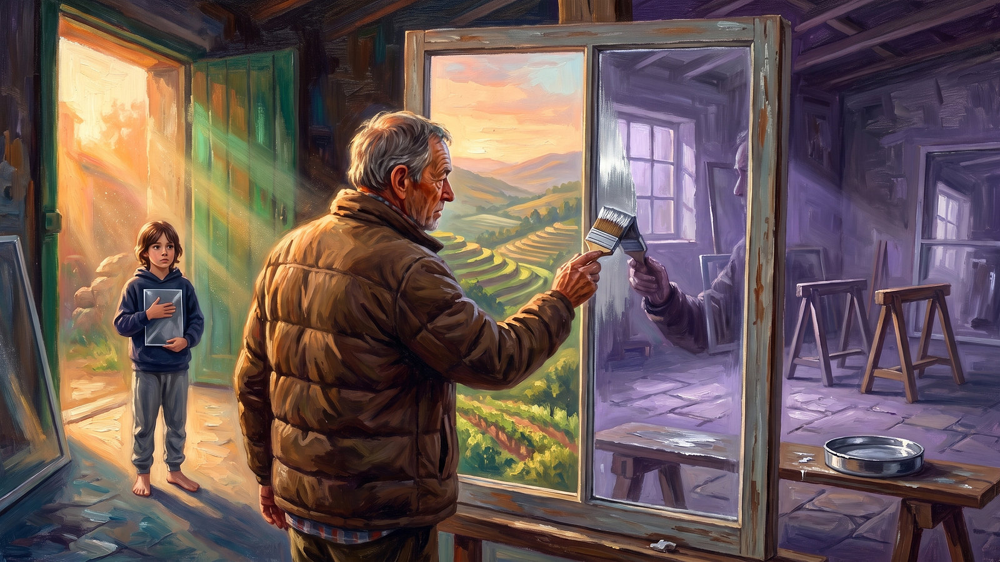
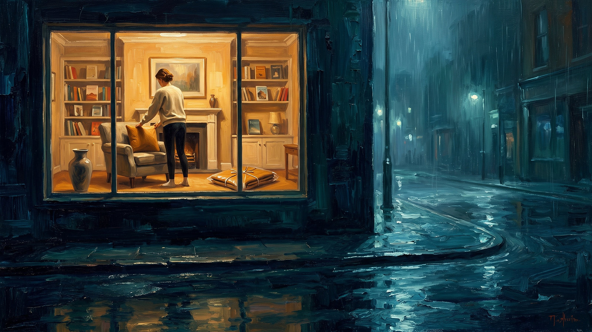
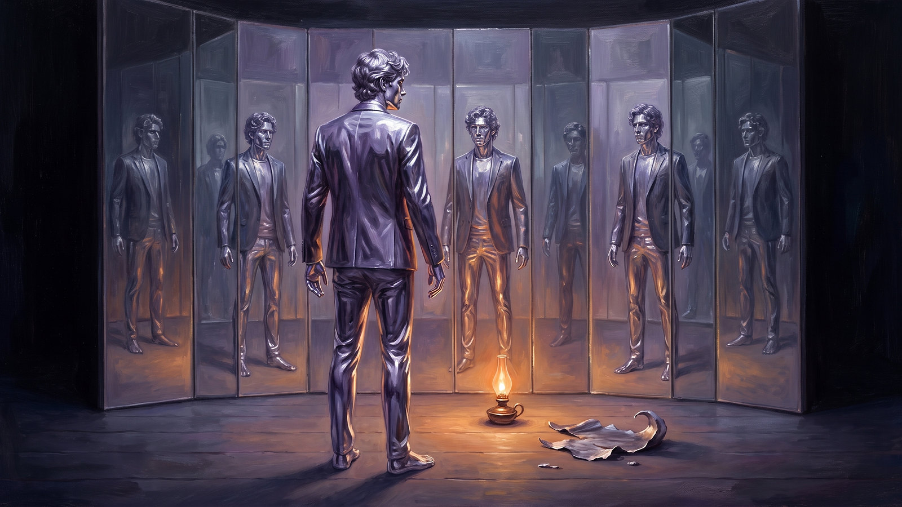
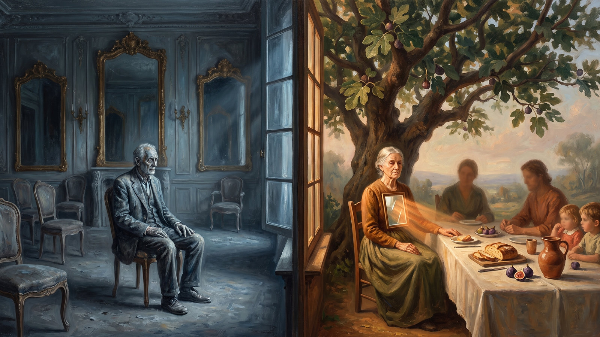
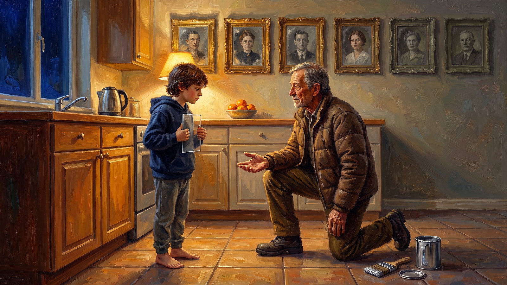
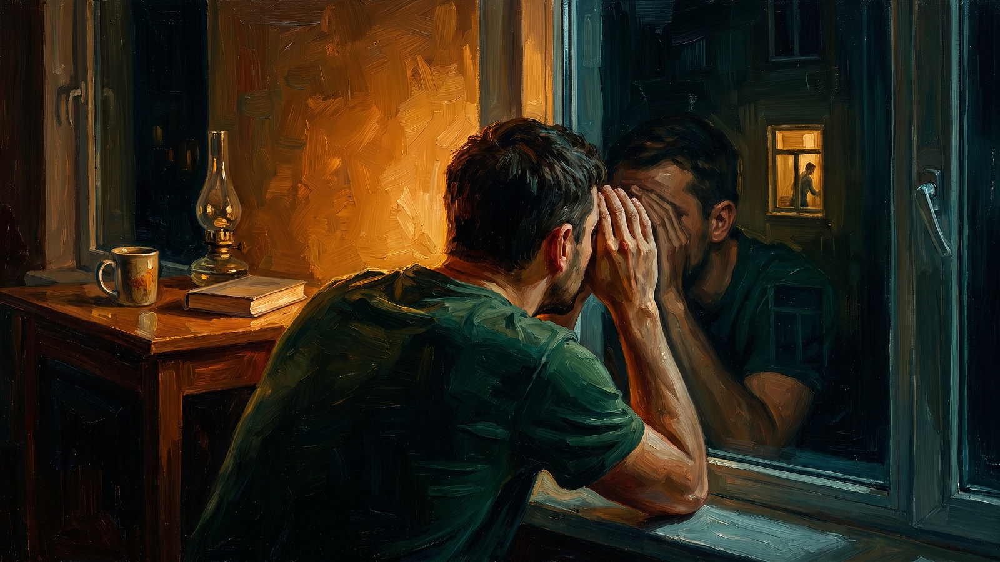

Two ways of being human, and the glass that separates them. On narcissism, harmony, inheritance and the age of the shop window.
Marko Boško seven parts · twenty three chapters
Preface
Why glass
A mirror is not a special material. A mirror is a window somebody painted over.
There are two surfaces a person looks at every day, and both are made of the same material.
One returns. You stand before it and you get an answer at once, clear, complete and about you. It is fast, reliable and closed. Whatever you bring to it, it gives back, no more and no less, and never anything new.
The other transmits. You stand before it and you do not see yourself, you see the other side. It does not answer immediately, it changes with the hour and the season, it is dirty after rain and it asks to be cleaned. But light comes in through it, and through the light comes everything else.
This book compares two ways a person can organise an inner life. The first sees the world as a room full of mirrors, the second as a house with windows. The first asks how much am I worth in your eyes, the second asks how do we stand together. Both are deeply human, both have their reasons, and both have their price.
The metaphor is not decoration
It was chosen because it is physically accurate, and that accuracy carries the whole book.
A mirror is a window that has been coated on the back with a thin layer of metal. In the sixteenth century Venetian craftsmen on the island of Murano applied an amalgam of tin and mercury to flat glass and so produced the first truly clear mirrors, and centuries later that coating was replaced by silver and finally by aluminium. Before the coating it was an ordinary window and light passed through it in both directions. After the coating the light stops and returns. The glass has lost its transparency and gained its shine.
Nobody is born a mirror. Every child is born a window. The silvering is applied from outside, in the earliest years, and someone else applies it.
For this reason the book does not treat narcissism as a defect of character but as an understandable, almost logical adaptation to an environment in which the light was not coming from the other side.
Three qualifications before we begin
First, the word narcissism here describes a pattern, it is not an insult. The clinical diagnosis of narcissistic personality disorder affects one to two per cent of people and it is made by a professional. What we are describing is mostly a subclinical trait present in all of us. Diagnosing at a distance almost always says more about the pain of the person diagnosing.
Second, the pursuit of harmony is not automatically a virtue. A window without a curtain is not openness, it is exposure.
Third, people are not types. The same person can be a mirror to subordinates, a window to their children and a wall in front of their own mother.
The physics of relationship
There is one question every person solves, consciously or not, every single day. How do I get to be myself and be with others at the same time.
This is the oldest human problem. We need belonging because without a group we are biologically dead, and we need a separate identity because without it there is no direction, no will and no responsibility. Murray Bowen called the resolution of that tension differentiation of self, the capacity to stay yourself and stay close at once. Edward Deci and Richard Ryan described three basic needs, autonomy, competence and relatedness, and showed that psychological health depends on all three being met, not just one.
The mirror is one solution. It says, I will shine so brightly that they will have to take me in. Belonging is not requested, it is won by performance.
The window is the other. It says, I will be with others so carefully that together we will create a space in which I can exist too.
Neither is complete. The first suffers from loneliness, the second from the loss of self.
And one physical fact we use throughout the book. A mirror does not produce light, it only returns it. For a mirror to shine, someone else has to switch on a lamp. This makes the narcissistic person literally more dependent on the environment than the window person is, even though from outside it looks exactly the opposite. A mirror without light is not a mirror, it is a dark panel.
Part one
Anatomy of Glass
The silvered side, the window side, and a short history of the idea.

Before the coating, light passed both ways. After it, the light comes back.
Ovid’s story of Narcissus is usually retold as a story about vanity. A young man fell in love with his reflection and died looking at it, so many people conclude that narcissism is too much love for oneself.
The story is far more subtle. Narcissus did not recognise the reflection as his own. He was in love with an image he believed to be someone else, and that image could never return his touch. He died of the impossibility of contact, not of self love.
It is also worth noticing that he was looking into water, and water is the only surface that is a mirror and a window at the same time. Had he dived, he would have seen depth. He stayed on the surface and that is what killed him.
Contrary to popular belief, at the centre of the narcissistic profile there is no genuine love of self but a deep and usually entirely unconscious insecurity. Narcissism is the replacement of contact with oneself by contact with an image of oneself.
Three layers of coating
Contemporary research, particularly the work of Aaron Pincus, Joshua Miller and Keith Campbell, shows that narcissism is not one thing but a set of related dimensions. The trifurcated model distinguishes three cores.
Grandiosity is a sense of being special, entitlement, a hunger for admiration and a tendency to overestimate one’s own abilities. This is the polished mirror everyone recognises.
Vulnerability is hidden and far less often identified. It looks like constant woundedness, hypersensitivity to criticism, envy, a feeling that the world fails to recognise one’s worth, withdrawal and chronic shame. The person may seem quiet, modest, even self sacrificing, while living inside permanent comparison. This is the clouded, tarnished mirror from the cellar, one that still does not transmit light but no longer shines either. Vulnerable narcissism is regularly misread as depression or social anxiety.
Antagonism is the thread that connects the first two. It includes exploitation, a lack of warmth, suspicion and an unwillingness to take another person’s perspective seriously. It is antagonism, not grandiosity, that best predicts the harm a person will do to others.
Most people oscillate between the grandiose and vulnerable states depending on how much light the environment is currently providing. This is called narcissistic fluctuation and it explains why the same person can seem untouchably self assured one day and fall apart over a single sentence the next.
Admiration and rivalry
Mitja Back and colleagues proposed a model in 2013 that separates two routes by which a narcissistic person maintains the image. The first is the admiration route, striving for brilliance, self promotion, charm, enthusiasm. The second is the rivalry route, defence against humiliation, devaluation of others, aggression, suspicion.
This explains one of the most confusing phenomena in such relationships. At the beginning these people are often extremely attractive and warm, because the admiration route is active. When admiration stops being new, or when a partner begins to have needs of their own, the rivalry route switches on and the same person becomes cold, critical and vengeful. This is not acting, it is a change of strategy within the same goal.
In our image, it is the difference between a mirror looking for a stronger lamp and a mirror that switches off other people’s lamps in order to remain the brightest object in the room.
What narcissism is not
Loving yourself is not narcissism. Healthy self esteem is stable and does not depend on constant comparison.
Caring for your own needs is not narcissism. Setting boundaries is often mislabelled as selfishness.
Being successful, ambitious or charismatic is not narcissism. Many outstanding professionals have high self confidence and high empathy at once.
Neither is every hurt feeling, every posted photograph or every argument in a marriage.
Stained glass, or communal narcissism
Stained glass was not made to transmit a gaze. It was made to be gazed at.
In 2012 Jochen Gebauer and colleagues described communal narcissism. This is a person who satisfies the same narcissistic needs in the domain of goodness rather than the domain of power.
Such a person says things like, I am the most empathic person I know, I always sacrifice myself for others, without me this community would fall apart. The motive is identical to grandiose narcissism, only the currency is moral superiority instead of status.
Spiritual communities, humanitarian organisations, associations, therapeutic circles and the caring professions are not immune to this, on the contrary they are fertile ground for it. The difference does not show in the words but in behaviour under pressure. When someone fails to acknowledge a communal narcissist as good, the reaction is rage, not sorrow.
The one way mirror
There is a kind of glass with a thin, partially reflective coating. From one side it is a window, from the other a mirror, and which it will be depends entirely on which side the light is on. It is used in interview rooms.
That is the most accurate picture of a manipulative relationship. One side sees everything, the other sees only itself. The person on the lit side begins to believe that the problem is theirs, because wherever they look their own face is returned to them. This is exactly what gaslighting does, the systematic disputing of another person’s perception and memory.
The window side
By a person oriented toward harmony we mean a person whose fundamental orientation is to maintain the quality of relationships and of the whole they belong to. The healthy version contains three capacities.
Feeling another person’s state without dissolving into it. This is regulated empathy, as opposed to empathic flooding.
Withstanding conflict. Harmony is not the absence of conflict but the capacity of a relationship to survive conflict. John Gottman did not find that stable couples argue less, but that they argue differently, keeping roughly five positive interactions to every negative one during conflict.
Holding an opinion of one’s own inside closeness. An undifferentiated person either fuses with others or flees from them, while a differentiated person can remain close and different at once.
A person oriented toward harmony usually experiences their own worth as something that arises within relationship. This resembles what African languages express with the word ubuntu, the idea that a person becomes a person through other people, or the Japanese concept of wa. Hazel Markus and Shinobu Kitayama showed that these are two equally valid ways of constructing identity, with different advantages and different risks.
The shadow of harmony, a window without a curtain

A house without a single curtain is not hospitable. It is exposed.
A curtain is not the enemy of light. It is the mechanism by which the occupant decides when they are visible, how much and to whom. A house without a single curtain is not hospitable, it is exposed, and in time the occupant stops arranging the room according to themselves and starts arranging it according to the view from the street.
In the nineteen forties Karen Horney described three neurotic movements, moving against people, moving away from people and moving toward people. The third, an excessive need for affection and approval, is an almost exact description of unhealthy harmony. The contemporary term is the fawn response, described by Pete Walker alongside the familiar triad of fight, flight and freeze.
The signs are recognisable. The person apologises when someone else has made a mistake. They feel physical discomfort when there is tension in a room and cannot settle until it is removed. They agree to things they do not want and then feel used. Their anger does not disappear but turns into quiet resentment, exhaustion or physical symptoms. They cannot answer the question what do you want.
Fogged glass
There is one more way a window stops working, and it is the opposite of a curtain. If a person presses their face against the glass, their own breath fogs the surface and they can no longer see anything. This is fusion. Too much closeness without distance does not create intimacy, it creates blindness. Healthy intimacy always includes a small but real distance.
The precise formulation
Adam Grant found that the worst outcomes belong to selfless givers, those who give without any concern for themselves. The best outcomes belong to givers who are oriented toward others and toward themselves at once, people who give generously but keep boundaries.
So the opposite of a mirror is not broken glass. The opposite of a mirror is a clean window with a curtain operated by the person who lives in the house.
A short history of the idea
In 1914 Freud described primary narcissism as a normal developmental phase, and secondary narcissism as the withdrawal of energy from the outer world back onto the self.
In the nineteen sixties and seventies Heinz Kohut developed self psychology and argued that narcissism arises from a deficit. The child did not receive enough mirroring, meaning a parent who sees it and delights in it, nor enough idealisation, meaning a parent who can be relied on as strong and calm.
It is worth pausing on Kohut’s choice of words. He says the child needs mirroring. Which means that a parent must at times be a mirror for the child. Window and mirror are not opposed in value but in direction and sequence. A child that was mirrored enough does not need to hunt for mirrors all its life. A child that was not builds one and carries it everywhere.
Otto Kernberg emphasised aggression and envy. Donald Winnicott introduced the true and false self, where the false self forms when a child must adapt to the parent’s needs instead of being seen in its own. Interestingly, the same mechanism can produce both of our profiles. Alice Miller described exactly that split in The Drama of the Gifted Child.
The attachment theory of John Bowlby and Mary Ainsworth provided the empirical frame. Grandiose narcissism is most often linked to the avoidant style, vulnerable narcissism to the anxious style, and healthy harmony overlaps most with the secure style.
Further reading for this part
Heinz Kohut, The Analysis of the Self, 1971. The origin of the deficit model. Clinical and dense, a book to own rather than read cover to cover.
Otto Kernberg, Borderline Conditions and Pathological Narcissism, 1975. The opposing position, envy and aggression rather than deficit.
Craig Malkin, Rethinking Narcissism, 2015. The best modern account of narcissism as a spectrum present in everyone.
Elinor Greenberg, Borderline, Narcissistic, and Schizoid Adaptations, 2016. The clearest description of the quiet, vulnerable type.
Christopher Lasch, The Culture of Narcissism, 1979. Diagnosed the whole culture thirty years before social media.
Karen Horney, Our Inner Conflicts, 1945. The three neurotic movements come from here.
Part two
Behind the Glass
Motivation, ways of thinking, shame and emptiness, and the relationship with oneself.

A mirror produces no light of its own. In silence there is no fuel.
If you want to understand someone’s behaviour, do not look at what they do. Look at what it regulates.
The basic drive of the narcissistic person is not enjoyment but regulation. They use other people as a thermostat for their own inner state. When they receive light they feel whole. When they do not, they feel an emptiness that is not a metaphor but a very bodily experience, one many describe as falling through.
For this reason every decision is filtered through a single question, how does this affect my image. That question operates below the level of awareness. The person does not consciously think they are manipulating, they genuinely experience being right and being wronged.
Campbell and colleagues described this as the chocolate cake model. Narcissism is delicious and highly functional in the short term. It brings energy, confidence, success in job interviews, fast promotion and attractiveness in the first weeks of a romance. In the long term it is harmful, like a diet consisting of chocolate cake. The bill arrives later, and it arrives mostly through relationships.
The basic drive of the person oriented toward harmony is preservation of the bond. When the relationship is all right, they relax. When there is unresolved tension they are agitated, even when the conflict is objectively harmless. In the healthy version this produces remarkable social intelligence and long lasting relationships. In the unhealthy version it produces chronic anxiety, because peace in a relationship never depends on us alone.
The same wound, two exits
Very often both profiles arise from the same kind of environment, one in which the child was not seen as it actually was. The difference lies only in the survival strategy the child chose.
A child who discovered that achievement and brilliance bring attention allowed the coating to be applied. A child who discovered that calming the parent and monitoring the mood of the house brings safety took the curtains off its windows and let the room stay permanently on view.
Within one family, even between twins, these two paths often separate depending on which role was already taken. This is why it is almost a law that the two profiles attract each other. One seeks light, the other knows how to shine for someone. The system fits perfectly and locks perfectly.
How a mirror thinks
Comparison is the basic mental operation. Another person’s success is automatically one’s own loss, because the world is experienced as a game in which someone must lose for someone to win.
Claiming credit and displacing blame are systematic. Overestimation of one’s abilities is measurable. The past gets quietly rewritten, because memories are reorganised to support the current image. This is not always a conscious lie, since human memory is reconstructive, but here the reconstruction has a clear direction.
Black and white thinking, called splitting in the clinical literature, means a person is either idealised or devalued with nothing in between.
The finding most often overlooked
Cognitive empathy, the ability to understand another person’s state, is usually intact in narcissistic people and sometimes above average. This is precisely what enables charm and accurate manipulation. What is weakened is affective empathy, the willingness to let another person’s pain change something in us. Ritter and colleagues demonstrated exactly this dissociation in 2011.
Translated into the image, a mirror sees perfectly the shape of whoever stands before it, but does not let them in.
How a window thinks
The basic mental operation is contextualisation. What else is going on, what is in the background for that person, how will this affect everyone else.
Scanning the room is a constant activity. The person tracks facial expressions, tone of voice, who has gone quiet. In the healthy version this is a skill, in the unhealthy version it is hypervigilance, the same mechanism found in people raised in unpredictable homes.
The unhealthy version also produces a specific kind of magical thinking, the belief that enough effort, understanding and patience will change the other person. That belief is the main reason people stay in destructive relationships for years. In the image, it is the belief that a mirror can be persuaded to become a window if you look at it lovingly for long enough.
The same situation, three readings
Situation
Mirror
Healthy window
Curtainless window
Criticised in a meeting
He attacked me, he wants my job, I must retaliate
Part is accurate, part is not, I will check and reply calmly
Everyone thinks I am incompetent, I must fix the atmosphere
Partner silent in the evening
He is punishing me, he is ungrateful
He seems tired, I will ask and give him space
He is angry with me, I must find out what I did wrong
A friend gets promoted
Why him, he must have known someone
I am glad, and I feel a sting of envy, and that is fine
I must be delighted and not feel anything ugly
The third column is just as automatic as the first. Only the direction differs.
Shame as the coating
Beneath the narcissistic structure there is almost always shame, not guilt. Guilt says I did a bad thing and leads toward repair. Shame says I am a bad thing and leads toward hiding or attacking. Research by June Tangney shows that shame proneness is linked to aggression and avoidance of responsibility, while guilt proneness is linked to empathy and to repairing harm.
Here the metaphor is at its most literal. Shame is precisely that layer applied to the back of the glass because of which light no longer passes. The person cannot let anyone in, because that someone would see what has been coated over.
So shame is expelled outward, most often as rage. In 1998 Bushman and Baumeister showed that aggression does not come from low self esteem but from threatened high self esteem. This is the narcissistic injury. An apparently trivial comment provokes a reaction completely out of proportion to the trigger. Those around conclude the person has lost their mind. In fact someone scratched the coating.
Anxiety, and anger that does not come out
In the person oriented toward harmony, anticipatory anxiety and guilt dominate. Anger is the most problematic emotion in this profile. It exists, but it is not permitted. It does not come out in direct expression but through exhaustion, physical symptoms, passive resistance, sudden outbursts after long endurance, or a quiet decision to end things without explanation.
Research on chronic stress and emotional inhibition links long term suppression with higher cortisol, poorer immune response, digestive problems and sleep disturbance. These findings should be read carefully because they are correlational, but the direction is consistent.
Empathic flooding
Too much empathy without regulation does not lead to helping, it leads to withdrawal. Research by Tania Singer distinguishes empathic distress from compassion. Distress activates networks associated with pain, it exhausts and it drives escape. Compassion activates networks associated with warmth and belonging, it is sustainable and it drives action.
I feel your pain and I am staying with you is not the same as I feel your pain and I am becoming you. The first helps, the second exhausts both people.
The relationship with oneself
The narcissistic person has high but fragile self regard. It behaves like a stock on an exchange, rising and falling with the daily news, so the person must trade, prove and defend without pause.
Unhealthy harmony has low self regard compensated through usefulness. I am worth as much as I am needed.
Kristin Neff proposed self compassion as an alternative to both. Research shows it is linked to lower anxiety and depression without any increase in narcissism, which cannot be said of self esteem to the same degree.
In other words, the road to health is not polishing the mirror harder, it is cleaning the window. You do not need more shine, you need to remove what stands between you and the world.
Further reading for this part
Helen Block Lewis, Shame and Guilt in Neurosis, 1971. She made the distinction this whole chapter rests on.
June Tangney and Ronald Dearing, Shame and Guilt, 2002. Where the shame versus guilt data lives.
Brené Brown, Daring Greatly, 2012. The same subject, written for a wide audience.
Alice Miller, The Drama of the Gifted Child, 1979. Short and devastating.
Donald Winnicott, Playing and Reality, 1971. The true and false self.
Kristin Neff, Self-Compassion, 2011. An alternative to both grandiosity and self erasure.
Part three
The World with Others
What the relationship looks like from inside, why it starts perfectly and why it ends in exhaustion.
The light travels from her to him and stops. From his side nothing comes back.
Relationships between these two profiles rarely collapse because of one dramatic scene. They collapse because one side has no capacity left.
Three phases
Idealisation. Intense attention, rapid closeness, the feeling that someone has finally seen the real us. In popular language, love bombing. The person is not necessarily insincere. In that moment they genuinely experience the partner as an extension of their own greatness, as a lamp that is finally bright enough.
Devaluation. When the partner shows their own needs, flaws or boundaries, they stop being perfect light. Criticism, comparison, coldness and complaints about trivia begin.
Discard or return. The relationship ends abruptly, or the partner is drawn back in when validation is needed again.
Mechanisms worth naming
Gaslighting. The systematic disputing of another person’s perception and memory. That never happened, you are too sensitive, you are imagining things. The aim is usually not conscious cruelty but the defence of a version of reality that must remain intact.
Triangulation. Introducing a third person as a source of comparison or insecurity.
Boundary testing. Every boundary is first probed, then ridiculed, then punished by the withdrawal of affection.
Projection. Seeing in another exactly what cannot be tolerated in oneself. What has been coated onto one’s own back is attributed to someone else’s glass.
Selective generosity. Extreme generosity in public, while the damage concentrates in private where there is no audience. A mirror does not shine in an empty room, so it does not need to perform there.
The room where they meet
Complementarity. The beginning is described as a perfect match, because one needs light and the other knows how to shine.
Boundary drift. Every small concession moves the boundary a few centimetres. After several years it is so far away that the person no longer recognises their own basic needs. No individual step was dramatic, and that is exactly why it went unnoticed.
Absorbing blame. One side already has the habit of looking for their own share in the problem, the other of assigning blame outward. The two habits fit together and produce a relationship in which one chronically repairs and the other chronically complains.
Isolation. Rarely an outright prohibition, more often a steady devaluation of friends and family until contact becomes too expensive. One window after another closes until the house holds nothing but artificial light and one polished surface.
An everyday example
A couple is planning a holiday. He wants the sea, she wants the mountains. The first time she says fine, the sea, because it clearly matters more to him. The second time she says the same to avoid a fight. The fifth time she does not mention the mountains at all. The tenth time, when someone asks where she would like to go, she honestly does not know.
No single concession was violence. The sum is.
What the window gets wrong
The healthy version brings real benefits. The other person feels safe, conflicts resolve without destruction, there is predictability. Such people are often the emotional connective tissue of families and teams. The unhealthy version brings four problems.
Invisibility. If someone never says what they want, others genuinely do not know. Later resentment rests on the assumption that others should have guessed.
Creating dependence. A person who takes over someone else’s responsibility deprives them of the chance to learn.
Unfair distribution. In households with partners of different sexes, women still carry the larger share of invisible labour. In that context an orientation toward harmony is not only a trait but a social expectation, and the expectation has a price.
The delayed explosion. After years of accommodation comes a sudden withdrawal that looks inexplicable to everyone around. This is the moment when the occupant, exhausted by exposure, does not draw the curtain but bricks up the window.
At work
Grijalva and colleagues found a striking pattern in a large meta analysis. Narcissism is positively related to emerging as a leader, but its relationship with leadership quality follows an inverted curve, where both very low and very high levels are associated with weaker effectiveness and moderate levels with the best.
This explains one of the most frustrating phenomena in organisations. Selection systems measure impression over short periods, and that is the discipline in which mirrors win. The damage shows up later, in staff turnover, in distorted information reaching the top and in a culture of fear.
Telling similar things apart
A person who has boundaries is not a narcissist. I cannot do this weekend is a boundary. I cannot because you are unimportant is something else.
A person who is hurt is not a narcissist. Vulnerability becomes narcissistic only when it includes entitlement and the devaluation of the other.
A person who is successful and self assured is not a narcissist. The key test is how they behave toward those who can give them nothing.
A person who avoids conflict is not necessarily unhealthy. The test is what happens to the unsaid. If it disappears, this is choosing your battles. If it accumulates, this is suppression.
The most reliable practical test for both profiles. How does the person behave when there is no audience and no advantage. And how do they behave when you say no.
An important caveat
If the relationship involved systematic belittling, control, financial restriction, isolation or the denial of reality, this is abuse, not a communication problem. Communication techniques are then not the solution and may prolong the harm. What is needed is outside help, a safety plan and a network of people beyond the relationship. If there is fear for physical safety, safety comes first, not understanding.
Further reading for this part
Murray Bowen, Family Therapy in Clinical Practice, 1978. Differentiation of self originates here.
Harriet Lerner, The Dance of Anger, 1985. Bowen written so it can actually be read.
John Gottman, The Seven Principles for Making Marriage Work, 1999. Decades of data on conflict in couples.
Sue Johnson, Hold Me Tight, 2008, and Amir Levine, Attached, 2010. Attachment in adulthood.
Harriet Braiker, The Disease to Please, 2001. On pleasing as a pattern.
Adam Grant, Give and Take, 2013. Why selfless givers fare worst.
Lundy Bancroft, Why Does He Do That?, 2002, and Evan Stark, Coercive Control, 2007. For everything beyond the frame of communication.
Part four
Time
The bill arrives later. What happens to both patterns across twenty and eighty years.

The same number of years, spent two different ways.
Keith Campbell once compared narcissism to chocolate cake, and I have not found a better comparison.
In the short term it is excellent. Energy, confidence, a good impression in job interviews, fast promotion, attractiveness in the first weeks of a relationship. In the long term it is a disaster, like a diet made of chocolate cake.
The comparison matters because it is honest. It admits the gains are real. People do not maintain patterns that do not work. Patterns persist precisely because they work, just on the wrong timescale.
The price of shine
Relationships get shorter. The circle of people who have known you for more than a few years slowly empties, and a person usually registers that not as a loss but as evidence that others were ungrateful.
With age, what was the main capital disappears, looks, status, power and novelty. At the same time, what carries a person in later life, closeness and reciprocity, was never built. This is why resentment and a sense of being failed by the world appear so often in later years.
There is good news too. Longitudinal research shows narcissism declines on average with age, especially the entitlement component, and that the steepest decline is associated with entering stable relationships and taking on responsible roles such as parenthood. The pattern is not destiny. But in some people that decline never arrives.
What Harvard actually found
The Harvard Study of Adult Development has followed people for more than eighty years. It began in 1938 with a group of students and a group of boys from poor Boston neighbourhoods, and it is still running.
Robert Waldinger, who directs it today, says they gathered mountains of data on diet, cholesterol, careers and income. When it was all counted, the best predictor of who would be healthy and happy in their seventies was none of that. It was the quality of close relationships in their fifties.
Alongside it, Julianne Holt Lunstad published a meta analysis in 2010 showing that strong social connection was associated with roughly a fifty per cent greater likelihood of survival across the periods studied. An effect comparable to quitting smoking and larger than the effect of physical inactivity.
The quality of relationships is a health parameter, not a luxury that comes after work and bills. And it is exactly the arena in which the mirror systematically loses.
Lest harmony seem free, the unhealthy version has its own price. Chronic exhaustion, burnout, loss of identity, physical symptoms and, at worst, a whole life spent in relationships chosen by other people.
When the circle closes
A person who gives without boundaries and waits for recognition that never arrives gradually develops a quiet moral superiority. They do not say it aloud, but they carry it. At that point they come dangerously close to communal narcissism, the profile they started from as an opposite.
In the image, a window that stood open in a draught too long and never got a curtain begins to coat itself from the inside, with a coating made of its own goodness. This is why healthy harmony is not a state but a maintenance practice.
Where the coating comes from
The most important study in this field was published in 2015 in PNAS. Eddie Brummelman and colleagues followed children and parents across four time points and separated two things we usually hold together.
Parental overvaluation, the belief that one’s child is more special and more deserving than other children, predicted a rise in narcissism.
Parental warmth, expressed affection and regard, predicted a rise in self esteem and not in narcissism.
The difference lies in what is praised
You are the best in your class is a message of comparison. I can see you worked on this for a long time is a message about process. I am glad you are here is a message of unconditional acceptance.
The first applies the coating. The other two clean the glass.
There is a second route, described in the older clinical literature, through coldness, unpredictability and emotional exploitation, and it leads more often to the vulnerable version. Two different coatings then, one from too much shine and one from too little warmth, and both stop the light equally well.
The coating can be thinned
In 2014 Hepper, Hart and Sedikides published a series of experiments with very optimistic implications. People high in narcissism showed low empathy under standard conditions, but when they were explicitly asked to take another person’s perspective their empathy rose, including physiological measures such as heart rate.
The conclusion is not that narcissistic people lack the capacity for empathy but that they do not use it spontaneously. It is a habit, and habits can change.
Let us stay realistic. In the full clinical picture motivation for change is low, because the person does not experience the problem as theirs, so dropout from therapy is high.
On the so called epidemic
Jean Twenge and Keith Campbell argued in 2009 that narcissism questionnaire scores among American students had risen across the decades. The claim entered public conversation as the narcissism epidemic and is now quoted as fact.
It has been seriously contested. Kali Trzesniewski, Brent Roberts and others raised methodological objections. In 2017 Eunike Wetzel and colleagues published data showing that scores in more recent cohorts are actually lower. It has also been shown that comparison across time can be undermined because the same questionnaire does not measure the same thing in different generations.
There is no convincing evidence that young people today are more narcissistic as people. There is evidence that the environment has changed and rewards narcissistic behaviour more than before. We do not need to claim that more mirrors were manufactured in order to notice that we have built a city of reflective surfaces.
Digital media, without the drama
Buffardi and Campbell showed in 2008 that narcissism can be identified from social media profile content. Gnambs and Appel published a meta analysis of longitudinal studies in 2018, the relationship exists but is small, in a loop that feeds itself. Amy Orben and Andrew Przybylski showed in 2019, testing all possible combinations of variables, that the association between screen time and adolescent wellbeing is very small.
Jonathan Haidt argues the opposite, that the shift to smartphones around 2012 is linked to a sharp rise in anxiety and depression among adolescents, especially girls. His position is widely held and simultaneously contested, because it rests on population level correlation.
What stands on the safest ground is this. Digital media probably do not create the narcissistic personality. They create an environment in which narcissistic behaviour pays, and that is enough to change a culture.
Further reading for this part
Robert Waldinger and Marc Schulz, The Good Life, 2023. The Harvard study told by the man who runs it.
John Cacioppo, Loneliness, 2008. Founder of social neuroscience, the pioneer of the whole field.
Vivek Murthy, Together, 2020. The same subject, more popularly written.
Alfie Kohn, Punished by Rewards, 1993, and Carol Dweck, Mindset, 2006. Both precede Brummelman and predict him.
Jean Twenge and Keith Campbell, The Narcissism Epidemic, 2009. To be read alongside the objections above.
Part five
Inheritance
Who applies the coating, five channels of transmission, and one sentence that breaks the chain.

The brush is set down. Where the hand does not touch it, the glass stays clear.
Nobody is born a mirror. The coating is applied from outside, in the first years, and it is usually applied by someone who loved us as well as they knew how.
That is the hardest part of this subject, because there is no comfortable villain in it, and a villain makes thinking so much easier.
Five channels of transmission
First channel, modelling
A child learns what is normal by watching, not by listening. If it is normal in the house that the loudest person is obeyed, the child learns that volume is currency. If feelings are never mentioned, it learns that feelings do not exist. If an argument never ends in reconciliation, it learns that relationships are fragile.
Declarative messages do not help here. A parent can say a thousand times that all people are equal, but if they talk down to the neighbour, the child learns that instead. What was seen always wins.
Second channel, role
Family systems assign roles, usually without a single spoken word.
The golden child carries parental pride and the pressure to shine at all times. The coating is applied through praise, and this is the case where everyone outside thinks the child is fortunate.
The scapegoat carries the family shame and learns to be guilty even when innocent.
The invisible child concludes that needing nothing is safest and bricks up the windows very early.
The parentified child looks after the parent and becomes an adult who instinctively cares for everyone except themselves.
A parent with narcissistic traits often treats a child as a trophy or an extension of themselves, so love becomes conditional on achievement or obedience. Under that pressure the child usually grows into either a new mirror, having absorbed the model of superiority, or a chronic people pleaser who loses their own identity. This is why one child in a family can become grandiose and another invisible. Roles are divided, not copied.
Third channel, the rule about feelings
Every family has an unwritten list of permitted and forbidden emotions. In one house anger is allowed and sadness is read as weakness. In another sadness is allowed and anger is read as betrayal. In another joy is forbidden because someone in the house is unhappy and it would be rude to be well.
The child absorbs that list and passes it on without a single spoken sentence. The adult then has whole emotional categories they cannot recognise in themselves and recognise perfectly in others.
Fourth channel, attachment
Research using the Adult Attachment Interview shows considerable correspondence between a parent’s classification before the child is born and the child’s classification later.
The protective factor was not a happy history but a processed one. A parent who had a difficult childhood but understood and integrated it passed on security.
That is probably the most liberating sentence in the entire literature on parenting. You do not need a good story. You need to know your story.
Fifth channel, the body
There are studies, for example Rachel Yehuda’s work on descendants of Holocaust survivors and research on the Dutch famine of the Second World War, suggesting that the effects of severe stress may be transmitted biologically. That literature is interesting but methodologically contested and far from consensus, so I cite it as a possibility, not a fact.
It is safer to say what is well documented. Stress is transmitted through parenting style and through the level of calm in the house. Worth mentioning alongside it is the Felitti and Anda study from 1998, with more than seventeen thousand participants, showing a strong association between the number of adverse childhood experiences and later outcomes.
How the chain breaks
Recognise the pattern and be able to name it. What is not named repeats automatically. Naming solves nothing by itself, but it takes the thing out of autopilot.
Tolerate your own discomfort without transferring it to the child. A parent who feels rage and does not discharge it has broken the transmission in that moment. Not forever, but then. The chain breaks in individual moments, not in decisions.
Repair. Research on mother and infant interaction shows that ruptures in attunement are extremely frequent, almost continuous, and that what matters is not avoiding them but repairing them. A child who sees that a relationship can be mended learns that relationships are durable.
A parent who never makes mistakes does not teach that lesson. A parent who makes mistakes and comes back does.
The sentence
Yesterday I shouted at you. That was not all right and it was not your fault. I was tired and I was not handling myself well. I am sorry.
Notice what is not in it. No but. No explanation that turns an apology into an accusation. No demand that the child say it is fine so the parent can feel better at once.
Most people who grew up in houses full of mirrors have never once heard that sentence from a parent. That is why it carries such force. It is the only process that removes the coating from someone else’s glass, and it works backward and forward at once.
What about a parent who will not change
Do not make acknowledgement a condition of your own recovery. If your healing depends on someone else’s sentence, you have handed that person the key a second time.
Distinguish understanding from excusing. You can understand why someone became this way and still refuse to be exposed to the consequences.
Set a boundary that protects rather than punishes. Shorter visits. Neutral topics. Leaving when the conversation starts down the familiar road.
Allow yourself to grieve. Not for what was, but for what never was. That is a real loss and it deserves to be named.
Further reading for this part
John Bowlby, Attachment and Loss, three volumes, 1969 to 1980. The foundation of all of this.
Daniel Siegel and Mary Hartzell, Parenting from the Inside Out, 2003. Its whole thesis is that a processed history protects, not a happy one.
Ed Tronick and Claudia Gold, The Power of Discord, 2020. Tronick ran the still face experiment. The pioneer and the popular book in one.
Salvador Minuchin, Families and Family Therapy, 1974. Roles within the family system.
Bessel van der Kolk, The Body Keeps the Score, 2014, and Nadine Burke Harris, The Deepest Well, 2018.
One warning. The popular epigenetics book, It Didn’t Start With You, goes well beyond what the data support. If you cite that area, cite Yehuda’s papers.
Part six
The Age of the Shop Window
Why the digital age does not create narcissists but pays them. And what happens at night.
Nobody lives behind a shop window. Behind a shop window, things are arranged.
There is a third kind of glass and it explains our era better than anything else.
A shop window looks like a window. It is transparent, large and bright. But its function is inverted. A window exists so the person inside can see out. A shop window exists so the person outside can see in.
Social platforms are, architecturally speaking, the conversion of windows into shop windows. It is not that people have become worse. It is that they have been placed in a space where every window faces the street and is lit from above by a spotlight.
Six properties of that space
Attention has become measurable. Before the internet, social status was vague, local and slow. Now it is numeric, public, global and instant. What gets measured gets optimised. When attention becomes currency, people begin to live economically rather than relationally.
The reward is unpredictable. You never know whether a post will land, and unpredictable reward is the most powerful reinforcement schedule known to the psychology of learning. Slot machines use the same mechanism. That is not a metaphor but literally the same technique, minus the tokens.
Editing is asymmetric. We display selected moments and watch other people’s selected moments and compare them with our own unedited lives. The comparison is rigged against us before it begins.
Bodily feedback is missing. Face to face, another person’s uncomfortable expression stops you mid sentence. On a screen there is none of that, and the absence of that brake measurably increases aggression.
Algorithms favour the extreme. William Brady and colleagues showed that each moral emotional word in a post measurably increases its spread. Because outrage is profitable, the system cultivates people who are good at outrage.
The personal brand has become a norm. What was once a hallmark of disorder, the constant management of one’s own impression, is now career advice given to fifteen year olds.
Small, banal consequences
A family lunch where the photograph comes before the eating.
A journey planned around which locations look good rather than what we actually want to experience.
Exercise that does not count unless it is recorded.
A spiritual practice that gets posted and thereby becomes a performance. This one is the most insidious, because the content appears to be the opposite of narcissism while the function is identical.
An argument in the comments where nobody is trying to understand anyone, because an audience does not watch understanding, it watches winning.
A child who learns that worth is numeric before learning that worth is possible without a number at all.
The hall of mirrors
If the shop window describes what we do to others, the hall of mirrors describes what the content does back to us.
Place two mirrors facing each other and you get an infinite corridor in which the same image repeats, deeper and darker each time. Nothing new enters. That is an accurate description of a closed loop of content shown to us because we already like it.
The disappearance of disagreement. When everything we see agrees with us, we stop training the muscle of understanding another person. Empathy is not an attitude but a skill, and skills atrophy without practice.
The inflation of identity. When a person is surrounded by reflections, their opinion stops being an opinion and becomes a belonging. An attack on an idea feels like an attack on the person, and injury leads to defence, not to thought. That is narcissistic injury at the scale of a society.
What the shop window does to those who are not mirrors
For people oriented toward harmony it is not easier, it is differently hard.
Extended responsibility. Someone who feels responsible for other people’s feelings is now exposed to the suffering of the whole world, twenty four hours a day, with no way to act on it. This produces chronic helpless compassion that exhausts without repairing anything.
The impossibility of delay. The expectation of an immediate reply means a person who struggles with boundaries is never off shift.
Invisibility. The space rewards standing out, and their skill is connecting, which is neither seen nor counted. In a world that counts the visible, those who hold the tissue together become statistically nonexistent. The quiet pursuit of deep connection loses not because it is weaker but because it does not display.
Night, when a window becomes a mirror

The glass has not changed. What changed is the relationship of light.
This is the most important chapter in the book and it rests on one banal physical fact.
By day you look out through a window. At night, when it is dark outside and the light is on inside, that same window becomes a mirror and gives you back your own face.
That is the most accurate description of what happens to a person in solitude, in grief, after a loss, after a failure, or during that long stretch when nobody has called. When there is no light outside, a person starts looking at themselves, and not with love but in a loop. Reviewing, comparing, rehearsing conversations that never happened, assembling defences for a court that is not in session.
Nobody applied a coating, and the effect is the same.
Three conclusions
First. A narcissistic state is not always a trait, sometimes it is just darkness. A person in deep isolation will behave more narcissistically than they actually are. Loneliness is a risk factor for the very patterns we usually moralise about.
Second. When a window becomes a mirror, you do not break the glass. There are two correct moves. Dim your own light, meaning quiet the inner monologue enough to see out again, which in practice means silence, meditation, walking, working with your hands. Or go up to the glass and cup your hands against it so the reflection cancels, which in practice means deliberately approaching one specific other person and asking how they are. Empathy switches on when it is explicitly requested, so request it of yourself.
Third. Dawn solves the problem without any technique at all. When there is light outside again, the window stops being a mirror by itself. This is why the most important intervention in this whole story is social rather than psychological. People do not only need therapy. They need someone on the other side of the glass.
Further reading for this part
Erving Goffman, The Presentation of Self in Everyday Life, 1959. The most important book for this chapter. The shop window is his stage, sixty years earlier.
Guy Debord, The Society of the Spectacle, 1967. The image replacing the lived relation.
Neil Postman, Amusing Ourselves to Death, 1985.
Sherry Turkle, Alone Together, 2011, and Reclaiming Conversation, 2015. The real pioneer of this field.
Nir Eyal, Hooked, 2014. The industry manual, variable reward explained by someone selling it.
Tim Wu, The Attention Merchants, 2016, and Shoshana Zuboff, The Age of Surveillance Capitalism, 2019.
Jonathan Haidt, The Anxious Generation, 2024. To be read alongside the objections in the text.
Part seven
The Glazier’s Trade
Balance is not the middle. Exercises for each side, and what a society can do.
The cracked mirror is kept, but turned to face the wall.
The most common error in thinking about this subject is the assumption that health is a point midway between narcissism and self sacrifice.
That would mean being moderately selfish and moderately empathic, in other words lukewarm in both directions. A more accurate picture has two independent axes. The first is strength of self, meaning how clearly I know who I am, what I want and where my boundaries are. The second is openness to the other, meaning how capable I am of feeling and honouring someone else’s experience.
Low openness
High openness
High strength of self
Mirror
Window with a curtain
Low strength of self
Wall
Window without a curtain
A window with a curtain operated by the person who lives behind it is what we are after. Someone who can say no without cruelty and yes without losing themselves.
An important practical consequence follows. These are not the same task. The mirror needs more transparency. The curtainless window needs a curtain installed. Advice that helps one can harm the other, and most popular advice does not make that distinction.
One more clarification. A healthy boundary is not a wall but double glazing. It keeps the cold outside and lets the light in. A boundary that lets everything through is not a boundary, and a boundary that lets nothing through is not a boundary either, it is abandonment.
For the one who lives before a mirror
The very fact that you asked the question is a good sign, because the defence exists precisely to prevent it.
Exercises
Notice the body before the reaction. Narcissistic injury has a bodily signature that precedes thought. Tightness in the chest, heat in the face, a racing heart. When you feel the urge to hit back immediately, wait ninety minutes. Not ninety seconds, because that is not enough, and not twenty four hours, because then it gets swept under the carpet.
Translate shame into guilt. When the thought I am worthless appears, translate it into I did something that was not all right. An apology has a structure. Say what you did without justification, say what effect it had, do not add but, then ask what would help.
Take perspective deliberately. Before an important conversation, write three sentences from the other person’s point of view, in the first person, in their voice. Include the parts you do not like.
Train small invisibility. Do one good thing each week that nobody will find out about. Do not post it, do not mention it, do not use it later in an argument. It is far harder than it sounds, and its difficulty is itself a diagnosis.
Keep one relationship with no benefit in it. Someone who can bring you no status, no work and no admiration. An elderly aunt, a neighbour, a former teacher. For a year.
Allow yourself to lose an argument. Once a week, on some small matter, say you may be right and stop, with no subtext and no returning to it. The nervous system has to learn that losing an argument is not death.
Where the pattern is pronounced, willpower alone is not enough. Approaches with documented results include schema therapy, transference focused therapy, mentalisation based therapy and long term psychodynamic work. What they share is that they work with the wound and not only the behaviour, and that they take time.
For the one who is disappearing through a window
Exercises
Separate peace from silence. Peace means the matter is resolved. Silence means it is buried. If the same subject is still circling three days later, it was not resolved.
Learn to recognise your own wish. Three times a day ask what would I like right now, with no obligation to act on it. The aim is to register the answer.
Introduce a pause before agreement. Instead of an automatic yes, say I will let you know by tomorrow. That one sentence changes more than most assertiveness techniques.
Set a boundary without explanation. Justification is a request for permission. Practise a boundary in one sentence. I cannot take that on. Not this weekend. That does not work for me. If the other person responds with anger, it does not mean the boundary is wrong, it means its absence was previously convenient.
Treat anger as information. Marshall Rosenberg’s structure works well. Observation without evaluation, then feeling, then need, then request. The first time the sentence is long and awkward. The seventh time it is not.
Step back from the glass. If a relationship has fogged over from too much closeness, distance is not betrayal but a condition of sight. One evening a week without messaging, one circle of friends of your own, one activity that is not shared.
Reconstruct your own life. Write a list of ten things that were yours before you started living according to other people’s needs. Music, places, people, food, how you used to spend a Saturday. Bring three of them back.
A healthy relationship can take a boundary, an unhealthy one punishes it. That is the fastest test of the quality of any relationship. Set one small boundary and watch what happens. The reaction is the answer.
Exercises for both
Once a week write down where you were unfair to others and where you were unfair to yourself. Both columns must be filled in.
In every significant conversation, ask at least two questions about the other person before telling your own story.
Instead of why did you do that, ask what did that look like from where you were standing.
When you get it wrong, come back within twenty four hours. It does not have to be perfect, it has to happen.
One Sunday a month with nothing posted, and without announcing that you are not posting, because that is a post too.
One face to face conversation a week, with a face, no screens, at least an hour. The immediate feedback of another person’s face is the only empathy training that never goes out of date.
Once a month, the question of which old story of mine am I currently looking through and attributing to other people. Projection is dirt on the glass, and dirty glass always looks like a dark world.
What a society can do
This is not only a personal question, because what a society celebrates is what it cultivates.
Family. Praise effort and specific behaviour rather than comparison with other children. Allow the full range of feelings and show how they are handled. Apologise to a child when a parent gets it wrong. Do not use a child as a source of parental worth, because a child is not a project.
School. The development of emotional and social skills should be as serious a part of the curriculum as mathematics. Constant ranking should be reduced, because when ranking becomes the basic grammar of schooling it teaches children that worth is relative and taken from someone else. Bullying should be addressed by changing the norm in the classroom, since research shows the behaviour of bystanders matters more than the behaviour of the bully.
Digital literacy. It is worth teaching children the difference between a window and a shop window, meaning content that shows them something about the world and content that sells them something about a person.
Workplaces. Stop selecting leaders purely on the impression they make in short encounters, introduce upward feedback, track staff departures as an indicator of leadership quality, reward the contribution people make to holding a team together and not only visible results, and protect those who raise problems. In a culture where raising problems is expensive, only flatterers and tyrants survive.
Culture. Restore value to what cannot be seen. Care for the elderly, the upkeep of a neighbourhood, a friendship of decades, parenting with no audience. Protect the places where people meet without a purpose, choirs, sports clubs, neighbourhood associations, dance groups. Robert Putnam showed how closely the decline of such associations tracks the decline of trust, and trust is the infrastructure everything else stands on.
Shared rhythm. Research on synchronised movement and on making music together shows increases in cooperation, trust and felt closeness among participants. It is no accident that every known culture has a ritual in which people move together in the same rhythm. It is the only known activity in which a person cannot look at themselves and stay in time at the same moment.
Jeffrey Young, Reinventing Your Life, 1993. Schema therapy, written for the reader rather than the therapist.
Pete Walker, Complex PTSD: From Surviving to Thriving, 2013. For the fawn response.
Robert Putnam, Bowling Alone, 2000. Social capital.
Amy Edmondson, The Fearless Organization, 2018, and Jim Collins, Good to Great, 2001. The best leaders were the ones who promoted themselves least.
Dan Olweus, Bullying at School, 1993. The pioneer of bullying research.
William McNeill, Keeping Together in Time, 1995. A historian arguing that moving together in rhythm is the foundation of human cooperation. The missing citation for the last section of this book.
Afterword
A window facing a garden
A mirror gives an instant answer. You look and you know. But a mirror does not grow, it does not change with the seasons and it gives back nothing you did not bring.
A window gives no instant answer. Through it you first see only a yard, and then in time you notice that something out there is growing, that things change without your permission and that you are part of that change. A window asks to be cleaned, to be curtained, to be repaired when it cracks and to be endured when it is dark outside.
The struggle between mirror and window is not only a conflict between two kinds of people in a society. It is a struggle inside each of us, every day, in small choices that do not look like choices.
The world of mirrors can be dazzling, tempting and full of instant reward, but at the end of the day it is always cold and empty, because there is never anyone in it except us. Choosing windows is the harder and slower path, and the only one that lasts.
The mature version is not exclusively one or the other. It knows that a mirror is useful in the morning, for a couple of minutes, to check whether your hair is in order, and that the rest of the day belongs to the window.
Be someone the light passes through in both directions. Be visible, but do not be a shop window. Be open, but keep a curtain you draw yourself. And if one day a night finds you in which your window becomes a mirror again, do not break it. Dim your own light, go up to the glass, cup your hands against it and look.
Someone is out there. Someone is always out there.
Appendix A. A self observation questionnaire
This is not a diagnostic instrument, it is a list of questions to think with.
On the pull toward the mirror
When someone criticises me, is my first reaction to check whether they are right or to hit back.
Do I remember compliments better than what people told me about themselves.
When a friend succeeds, do I feel gladness first or a sting.
How many people have known me for more than ten years and are still close.
When did I last apologise without using the word but.
Do I behave the same way toward a waiter as toward a boss.
On the pull toward the curtainless window
Can I answer the question what do you want without a pause.
How many times this week did I say yes when I meant no.
When someone in the room is tense, can I stay calm or must I fix it.
Do I feel guilty when I rest.
When did I last tell someone that something hurt me, on the day it happened.
Would the people in my life be able to say what I love.
On glass and light
When did I last do something and tell nobody.
How long can I be alone before the window turns into a mirror.
Which one sentence should I say this week that I am afraid to say.
Who do I owe an apology.
What is mine that I abandoned for someone else.
Appendix B. A glossary of metaphors
Image
Meaning
Glass
The boundary between the inner and outer world, the way a person is in contact
Window
A healthy relational orientation, transmitting light in both directions
Mirror
The narcissistic organisation, a window coated on the back
Silvering
Shame, idealisation or coldness applied in childhood
Light
Attention, validation and admiration, what we call narcissistic supply
Curtain
A boundary, the mechanism by which the occupant decides when they are visible
Wall
Avoidance, severed contact, a house with no windows
Double glazing
A healthy boundary that keeps out the cold and lets in the light
Fogged glass
Fusion, closeness so complete that it removes sight
Stained glass
Communal narcissism, glass made to be looked at
One way mirror
Manipulation, where one side sees everything and the other only itself
Shop window
Digital architecture, a window behind which nobody lives, only arranges
Hall of mirrors
A closed loop of content in which nothing new enters
Night
Solitude and loss, when every window temporarily becomes a mirror
Dawn
The return of light from outside, meaning other people
Garden
Relationships that grow and outlive us
Appendix C. A note on the reading lists
The reading lists sit at the end of each part. For each one I have tried to name both the pioneer, meaning whoever opened the field, and the book that actually reached people. They are not always the same person, and that is normal.
Read with care
Part of the literature in this field, especially popular books about narcissism, tends toward exaggeration and toward turning psychological concepts into weapons. It helps to read comparatively and to look for sources that state how large an effect is, not only that it exists.
This book is informational. It is not a substitute for psychotherapy or any other form of professional care, and the descriptions of patterns in it are not diagnostic tools, neither for yourself nor for anyone else. If you recognise serious suffering in yourself or someone close to you, please seek professional help.